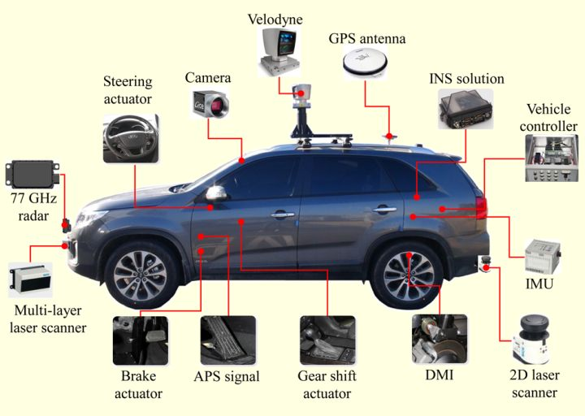

硬件总览

1. 概述
自动驾驶系统是一个高度集成的复杂系统，其硬件架构的设计水平直接决定了自动驾驶功能的上限。与传统汽车相比，自动驾驶车辆需要具备实时感知外部环境、精确定位自身位置、高速处理海量传感器数据、以及在毫秒级时间窗口内做出安全决策的能力。这对车载硬件系统在算力、功耗、可靠性和功能安全等方面提出了前所未有的挑战。
现代自动驾驶硬件系统通常包含数十种传感器、多个高性能计算单元、复杂的车载网络以及精密的执行机构。系统总算力需求从辅助驾驶（L2+）的数十TOPS到完全无人驾驶（L4/L5）的数千TOPS不等。如何在满足车规级（AEC-Q100）可靠性要求、严苛功耗约束以及功能安全（ISO 26262）规范的前提下，构建高性能的车载计算平台，是当前自动驾驶硬件领域最核心的技术挑战。
2. 电子电气（E/E）架构演进
车辆电子电气（Electrical/Electronic，E/E）架构描述了车内所有电子控制单元（ECU）的拓扑关系、通信方式及供电方式。随着自动驾驶等级的提升，E/E架构经历了从分散走向集中的深刻变革。
2.1 第一代：分布式架构（Distributed Architecture）
这是传统汽车沿用数十年的经典架构。车辆的每一项功能（如车窗控制、座椅调节、ABS制动）均由一个独立的ECU负责执行，ECU之间通过CAN总线进行低速通信。
- 特点： 功能与硬件一一对应，开发和供应链管理相对简单
- ECU数量： 高端车型可达 100+ 个
- 主要问题： 线束重量大（高端车型线束可超过60公斤）、ECU数量过多导致集成度低、OTA升级困难、无法支撑高级别自动驾驶所需的跨域数据融合
2.2 第二代：域集中式架构（Domain Centralized Architecture）
为解决分布式架构的弊端，博世等Tier1供应商率先提出将功能相近的ECU整合到同一"域控制器"（Domain Controller）中。典型的域划分方式如下：
- ADAS域（智能驾驶域）： 整合摄像头、雷达数据处理与自动驾驶决策
- 座舱域（Cockpit域）： 整合仪表盘、中控屏、HUD、车联网等功能
- 底盘域（Chassis域）： 整合制动、转向、悬架等底盘控制功能
- 车身域（Body域）： 整合车门、车窗、灯光、空调等舒适性功能
- 动力域（Powertrain域）： 整合发动机/电机管理、变速箱控制等功能
代表车型： 小鹏P7、理想ONE早期版本（双域控制器方案）
2.3 第三代：中央计算架构（Central Computing Architecture）
进一步将多个域控制器整合为一个或少数几个高性能中央计算单元（Central Compute Unit，CCU），同时引入区域控制器（Zone Controller）就近处理本地IO信号，通过高速车载以太网骨干网连接。
- 特点： 算力极度集中，软件定义汽车（SDV）成为可能，OTA能力大幅增强
- 代表企业： 特斯拉（FSD Computer / HW4）、小鹏汽车（X-EEA 3.0）
- 优势： 线束大幅减少、算力可按需扩展、整车功能可通过软件迭代升级
2.4 第四代：分区（Zonal）架构（Zonal Architecture）
分区架构是当前行业前沿探索方向。其核心思想是按照车身的物理区域（前左/前右/后左/后右/中央）而非功能域来部署区域控制器，各传感器和执行器就近接入最近的区域控制器，从而进一步减少线束、降低延迟。
- 代表企业： 大众（E3平台，搭载于ID.系列）、宝马（NEUE KLASSE平台）、奔驰（MMA平台）
- 核心优势： 线束长度减少约30%，整车重量降低，电气系统可靠性提升
2.5 四代架构综合对比
| 对比维度 | 分布式架构 | 域集中式架构 | 中央计算架构 | 分区架构 |
|---|---|---|---|---|
| ECU/控制器数量 | 100+ ECU | 5~10个域控 | 1~3个CCU + 若干区域控制器 | 1个中央计算 + 4~6个区域控制器 |
| 典型计算算力 | <1 TOPS（分散） | 10~100 TOPS（ADAS域） | 200~2000 TOPS | 500~2000+ TOPS |
| 车载网络带宽 | CAN（1Mbps） | CAN FD + 百兆以太网 | 千兆/万兆以太网 | 万兆以太网骨干 |
| 线束重量 | 最重（50~70kg） | 较重（40~60kg） | 较轻（30~50kg） | 最轻（减少30%+） |
| OTA升级能力 | 极弱 | 较弱 | 强 | 极强 |
| 软件定义能力 | 无 | 初步支持 | 完整支持 | 原生支持 |
| 量产成本 | 低（单ECU成本低） | 中 | 较高（CCU成本高） | 中高（长期可降） |
| 代表车型 | 传统燃油车 | 小鹏P7、理想ONE | 特斯拉Model 3/Y | 大众ID.系列、宝马NEUE KLASSE |
3. 硬件系统分层架构
自动驾驶硬件系统可按功能划分为感知层、计算层、通信层和执行层四个逻辑层次。
┌─────────────────────────────────────────────────────────────────┐
│ [ 执行层 Actuation Layer ] │
│ EPS（电动助力转向） EHB（电子液压制动） ETC（电子油门） EPB │
└─────────────────────────────────────────────────────────────────┘
▲ 控制指令
┌─────────────────────────────────────────────────────────────────┐
│ [ 计算层 Compute Layer ] │
│ 中央计算单元（CCU） / 域控制器 / 边缘计算节点 │
│ CPU + GPU + NPU + ISP 异构SoC │
└─────────────────────────────────────────────────────────────────┘
▲ 原始数据 / 预处理数据 ▼ 融合感知结果
┌─────────────────────────────────────────────────────────────────┐
│ [ 通信层 Network Layer ] │
│ CAN / CAN FD / LIN / 车载以太网（100BASE-T1 / 1000BASE-T1） │
└─────────────────────────────────────────────────────────────────┘
▲ 传感器原始数据
┌─────────────────────────────────────────────────────────────────┐
│ [ 感知层 Perception Layer ] │
│ 摄像头 激光雷达 毫米波雷达 超声波雷达 IMU GNSS 高精地图 │
└─────────────────────────────────────────────────────────────────┘
3.1 感知层
感知层负责将物理世界的信息转化为数字信号，是自动驾驶系统认知外部世界的"眼睛和耳朵"。
| 传感器类型 | 典型代表 | 探测范围 | 主要用途 |
|---|---|---|---|
| 摄像头（Camera） | 索尼IMX490、安森美AR0820 | 0~300m（长焦） | 目标识别、车道线检测、交通标志识别 |
| 激光雷达（LiDAR） | Velodyne VLP-32、速腾聚创RS-LiDAR-M1 | 0.5~200m | 3D点云建图、障碍物检测、高精定位 |
| 毫米波雷达（mmWave Radar） | 博世SRR5、德尔福ESR 2.5 | 0~250m | 速度测量、全天候目标检测 |
| 超声波雷达（Ultrasonic） | 法雷奥Ultrasonic | 0~6m | 近距离障碍物检测、泊车辅助 |
| IMU（惯性测量单元） | Xsens MTi-680、ADI ADIS16470 | N/A | 姿态估计、航位推算 |
| GNSS（卫星定位） | 天宝BD992、华测CGI-410 | 全球 | 绝对位置定位（RTK精度<10cm） |
多传感器融合： 单一传感器均存在局限性（摄像头受光照影响、激光雷达受雨雪影响、毫米波雷达分辨率低），实用的自动驾驶系统通常采用"摄像头+激光雷达+毫米波雷达"的异构融合方案，在算法层（前融合或后融合）进行互补。
3.2 计算层
计算层是自动驾驶系统的"大脑"，负责执行感知、融合、定位、规划和控制等核心算法。
- 中央计算单元（CCU）： 搭载高性能SoC（如NVIDIA Orin/Thor、华为昇腾），承担L2+及以上级别的自动驾驶主算法
- 域控制器（Domain Controller）： 域集中式架构中的区域算力节点，通常搭载中端SoC
- 边缘计算节点（Edge Node）： 靠近传感器部署，承担数据预处理、压缩传输等工作，降低骨干网带宽压力
3.3 通信层
车载网络是连接各硬件节点的"神经系统"，不同总线技术适用于不同场景。
| 总线类型 | 带宽 | 主要应用场景 |
|---|---|---|
| CAN（Controller Area Network） | 1 Mbps | 底盘控制、车身控制等低速控制信号 |
| CAN FD（Flexible Data-rate） | 8 Mbps | 升级版CAN，支持更大数据帧 |
| LIN（Local Interconnect Network） | 20 Kbps | 车窗、座椅等低带宽传感器/执行器 |
| 车载以太网（100BASE-T1） | 100 Mbps | 摄像头数据传输、ECU软件升级 |
| 车载以太网（1000BASE-T1） | 1 Gbps | 激光雷达数据、域控间骨干通信 |
| 车载以太网（10GBASE-T1） | 10 Gbps | 中央计算架构骨干网 |
3.4 执行层
执行层将计算层输出的控制指令转化为车辆的物理动作，实现对车辆的精确控制。
- EPS（Electric Power Steering，电动助力转向）： 接收转向角指令，精度可达0.1°
- EHB（Electro-Hydraulic Brake，电子液压制动）/ iBooster： 接收制动力矩指令，响应时间<150ms
- ETC（Electronic Throttle Control，电子油门）： 接收加速度指令，控制发动机/电机输出扭矩
- EPB（Electronic Parking Brake，电子驻车制动）： 配合自动泊车等场景使用
4. 算力需求分析
4.1 不同自动驾驶等级的算力需求
自动驾驶等级越高，需要处理的传感器数量越多、算法越复杂，对算力的需求呈指数级增长。
| 自动驾驶等级 | 典型功能 | 算力需求（TOPS） | 代表算法 |
|---|---|---|---|
| L1 | ACC自适应巡航 | <5 TOPS | 毫米波雷达目标跟踪 |
| L2 | 车道保持+自动刹车 | 5~30 TOPS | 单目视觉+毫米波融合 |
| L2+（NOA/NGP） | 高速/城市辅助驾驶 | 30~100 TOPS | 多摄像头BEV感知+规划 |
| L3 | 限定场景自动驾驶 | 100~500 TOPS | 多传感器深度融合+预测规划 |
| L4（Robotaxi） | 城区全自动驾驶 | 500~2000 TOPS | 大模型感知+端到端规划 |
4.2 主流自动驾驶SoC算力对比
| SoC型号 | 厂商 | 制程 | AI算力（TOPS） | 功耗（W） | 效率（TOPS/W） | 量产状态 |
|---|---|---|---|---|---|---|
| EyeQ5H | Mobileye | 7nm | 24 TOPS | 5W | 4.8 | 量产 |
| Orin X | NVIDIA | 7nm | 254 TOPS | 65W | 3.9 | 量产 |
| Thor | NVIDIA | 4nm | 2000 TOPS | ~150W | 13.3 | 2025量产 |
| 征程6 Ultra | 地平线 | 7nm | 560 TOPS | 35W | 16.0 | 量产 |
| 昇腾910B | 华为海思 | 7nm | 400 TOPS | 75W | 5.3 | 量产 |
| Mali-G78（汽车版） | ARM | 5nm | — | — | — | IP授权 |
注：TOPS（Tera Operations Per Second）为整数运算（INT8精度）峰值算力，实际可用算力因软件栈差异约为标称值的50~80%。
4.3 异构计算架构
现代自动驾驶SoC均采用异构计算架构，不同计算单元各司其职：
- CPU（中央处理器）： 负责操作系统调度、任务管理、决策规划等串行控制逻辑
- GPU（图形处理器）： 负责深度学习推理中的大规模并行矩阵运算
- NPU/DLA（神经网络处理单元）： 专为深度学习推理优化的固定功能加速器，能效比优于GPU
- ISP（图像信号处理器）： 负责摄像头原始RAW图像的降噪、HDR、色彩校正等预处理
- VPU（视频处理单元）： 负责视频的硬件编解码，降低CPU/GPU负担
以NVIDIA Orin为例，单颗SoC集成了12核ARM Cortex-A78AE CPU、2048核Ampere GPU、2个深度学习加速器（DLA）以及专用ISP，通过统一的内存架构实现各单元间的高效数据共享。
5. 功耗与热管理
5.1 车载计算平台功耗预算
车载计算平台的功耗设计受到整车电气系统的严格约束，不同应用场景的功耗预算差异显著：
| 应用场景 | 典型功耗范围 | 供电来源 |
|---|---|---|
| L2辅助驾驶（单域控） | 20~50W | 12V车载电源 |
| L2+高阶辅助驾驶 | 50~150W | 12V/48V车载电源 |
| L4 Robotaxi计算平台 | 150~500W | 高压动力电池直供 |
| 完整自动驾驶套件（含传感器） | 300~1000W | 高压动力电池直供 |
5.2 散热技术方案
车载计算平台的散热设计需在高温环境（发动机舱可达80°C以上）下保证芯片结温不超限：
- 被动散热（自然对流+导热垫+铝制散热器）： 适用于20W以下的低功耗模块，结构简单，无运动部件
- 强制风冷（导热垫+散热器+风扇）： 适用于50~150W的中等功耗平台，成本低，但风扇寿命和噪音需关注
- 液冷（冷板+冷却液循环回路）： 适用于150W以上的高功耗计算平台，散热效率高，与整车冷却系统集成
- 热管/均热板（VC）： 常用于将热点扩散到更大散热面积，配合液冷使用
5.3 功耗效率对比
在自动驾驶SoC选型时，TOPS/W（算力功耗比）是核心指标之一：
| 计算平台 | 总功耗 | AI算力 | TOPS/W |
|---|---|---|---|
| Mobileye EyeQ5H | 5W | 24 TOPS | 4.8 |
| NVIDIA Orin X | 65W | 254 TOPS | 3.9 |
| 地平线征程6 Ultra | 35W | 560 TOPS | 16.0 |
| NVIDIA Thor | ~150W | 2000 TOPS | 13.3 |
地平线征程6系列凭借自研BPU（Brain Processing Unit）架构，在TOPS/W效率方面处于行业领先水平。
5.4 车规级温度与环境要求
车载芯片须满足AEC-Q100汽车级可靠性标准，远比消费级芯片严苛：
- 结温范围： -40°C ~ +125°C（Grade 1）或 -40°C ~ +150°C（Grade 0，用于发动机舱）
- 振动冲击： 满足ISO 16750-3车辆振动标准
- 电磁兼容（EMC）： 满足CISPR 25车载EMC标准
- 防护等级： 依安装位置不同，通常要求IP5K4K ~ IP69K
6. 功能安全硬件要求
自动驾驶硬件系统须满足ISO 26262功能安全标准的相关要求，其中硬件架构的容错设计是核心。
6.1 硬件冗余架构
冗余设计是实现高ASIL等级（ASIL C/D）的基本手段：
- 双芯冗余（Dual-Core Lockstep，DCLS）： 两个CPU核心以同步方式执行相同指令，逐周期比对输出结果，若不一致则触发安全机制。适用于ASIL D安全通道。代表产品：英飞凌AURIX TC3xx系列。
- 三模冗余（Triple Modular Redundancy，TMR）： 三套独立系统并行运行，以"多数表决"方式决定最终输出。可容忍任意单点故障，常用于飞行控制、高铁控制等高安全级别场景，在Robotaxi制动/转向冗余中开始应用。
- 主备冗余（Active-Standby Redundancy）： 一套主系统工作，一套备用系统热备，主系统故障后自动切换。切换时间（Switchover Time）是关键指标，通常要求<100ms。
6.2 Fail-Safe vs Fail-Operational
| 策略 | 含义 | 适用场景 |
|---|---|---|
| Fail-Safe（故障安全） | 发生故障后，系统进入预定义的安全状态（如减速靠边停车） | L2/L3辅助驾驶 |
| Fail-Operational（故障可操作） | 发生单点故障后，系统仍能以降级模式维持基本自动驾驶功能 | L4/L5完全自动驾驶 |
Fail-Operational架构要求制动、转向、计算等关键系统均具备双路独立冗余（Dual Redundancy），如特斯拉HW4中双冗余供电、双冗余制动系统的设计。
6.3 看门狗（Watchdog）电路
看门狗是一种硬件定时器，用于监控主处理器的运行状态。若主处理器在规定时间窗口内未向看门狗发送"喂狗"信号（通常为一个特定脉冲序列），看门狗将自动触发系统复位或进入安全状态。
- 外部看门狗： 独立于主SoC的专用安全MCU（如英飞凌TLF35584），可靠性更高
- 窗口看门狗（Window Watchdog）： 要求在规定时间窗口的特定范围内喂狗，既防止程序"死机"，也防止程序"跑飞"
6.4 硬件安全模块（HSM）
硬件安全模块（Hardware Security Module，HSM）是集成于SoC或独立芯片内的安全计算单元，用于：
- 安全启动（Secure Boot）： 通过数字签名验证软件镜像完整性，防止恶意代码注入
- 密钥管理： 安全存储加密密钥，防止物理攻击提取
- 通信加密（SecOC）： 对CAN/以太网报文进行MAC（消息认证码）验证，防御重放攻击和伪造攻击
- V2X安全： 支持车路协同通信中的PKI（公钥基础设施）证书管理
7. 主流硬件平台案例分析
7.1 特斯拉 HW4（Hardware 4）
特斯拉于2023年随Model S/X Plaid率先推出HW4硬件平台，并逐步推广至全系车型。
- 处理器： 双FSD（Full Self-Driving）芯片，共计2颗自研FSD SoC
- 算力： 单片FSD SoC算力约1008 TOPS，双片总计约2016 TOPS
- 传感器配置： 取消超声波雷达，采用纯视觉方案（8摄像头），摄像头分辨率从1.2MP升级至5MP
- 制程： 三星5nm工艺制程
- 冗余设计： 两颗FSD SoC互为冗余，配合独立安全MCU实现Fail-Operational
- 特点： 纯视觉路线（Tesla Vision），端到端神经网络架构，依托庞大车队数据进行持续学习
7.2 理想汽车（双 Orin X 方案）
理想L7/L8/L9等AD Pro/Max版本采用NVIDIA Orin X平台。
- 处理器： 2颗 NVIDIA Orin X
- 总算力： 2 × 254 TOPS = 508 TOPS
- 传感器配置： 1颗激光雷达 + 11颗摄像头 + 6颗毫米波雷达 + 12颗超声波雷达（AD Max版本）
- 软件平台： Mind GPT多模态大模型，部署于车端进行实时推理
- 功能安全： Orin内置ASIL-D安全岛（Safety Island），配合独立ADAS MCU实现冗余监控
7.3 华为 MDC 810（移动数据中心）
华为智能汽车解决方案（HI）面向L4级自动驾驶推出MDC（Mobile Data Centre）810平台。
- 处理器： 昇腾（Ascend）910车规版（简称AtlasRE 2.0/3.0）
- 算力： 400 TOPS（INT8）
- 接口支持： 支持16路摄像头、5路激光雷达、6路毫米波雷达同步接入
- 操作系统： 运行华为自研AOS（Autonomous Driving OS）
- 合作方： 阿维塔、极狐、问界等华为HI合作品牌
- 功能安全： 通过ISO 26262 ASIL-D认证
7.4 小鹏 XPILOT 4.0（搭载 NVIDIA Thor）
小鹏汽车在其下一代智能驾驶方案中率先宣布采用NVIDIA Thor平台。
- 处理器： NVIDIA Thor（代号"Thor"，单片2000 TOPS）
- 架构特点： Thor将自动驾驶算力与座舱算力整合于单一SoC，实现"智驾+座舱"跨域融合
- 传感器配置： 支持纯视觉方案（无激光雷达）的XNGP城市辅助驾驶
- 通信架构： 基于X-EEA 3.0集中式电子电气架构，配合中央超算与区域控制器
8. 参考资料
-
ISO 26262:2018 — Road Vehicles – Functional Safety. International Organization for Standardization, 2018. [自动驾驶功能安全国际标准]
-
NVIDIA Orin Technical Reference Manual — NVIDIA Corporation, 2022. [Orin SoC架构与接口规格白皮书]
-
吴甘沙 等. 《自动驾驶：人工智能将会怎样重塑我们的出行》. 机械工业出版社, 2018.
-
地平线（Horizon Robotics）. 《征程6系列产品白皮书》. 2023. [征程6 SoC架构与自动驾驶应用方案]
-
陈慧岩, 熊光明 等. 《无人驾驶汽车概论》（第2版）. 北京理工大学出版社, 2019. [国内权威自动驾驶教材，涵盖传感器与计算平台章节]